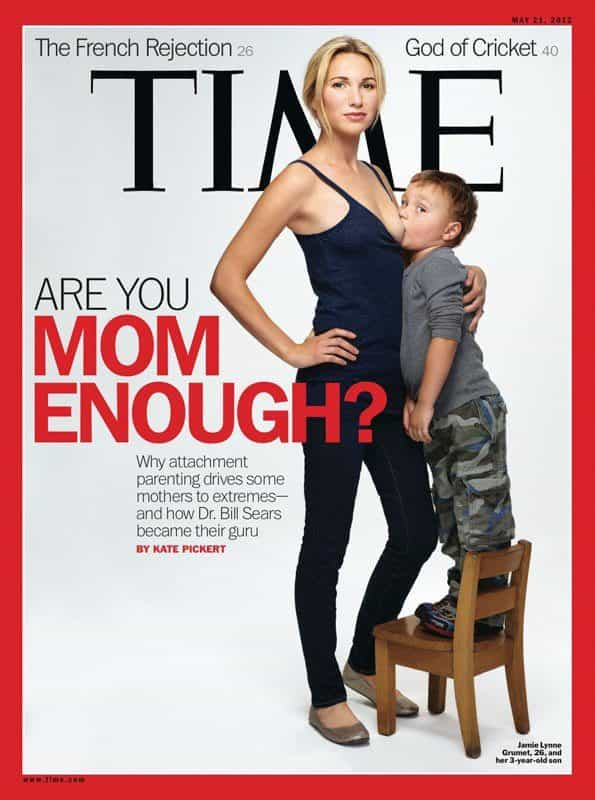
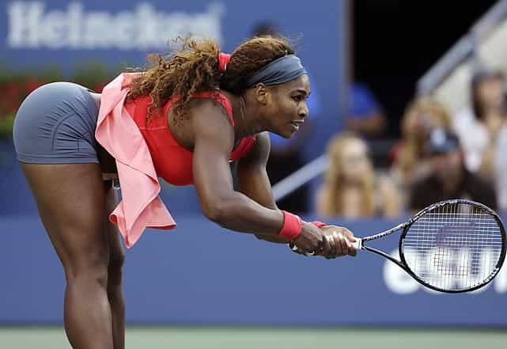
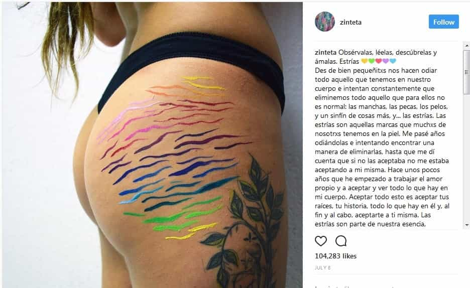

Mr. Luthra is an author and artist who writes about news, fitness, culture, and anything else that meets his interests. If you like his style, visit The Straightforward Voice, where you can find more FREE content.


In the age of the internet, women can’t stop exploiting themselves on the internet in ways that can be described as perverted or even pornographic. Lately we’re seeing new lows where women are doing anything to make a quick buck or achieve overnight fame.
Girls come up with creative excuses, but to the trained eye, they are simply attention whoring. From showcasing their pregnant bodies, to offering to deliver a porn flick in exchange for subscribers, the internet has empowered them to do whatever they please without the fear of consequence.
Before continuing, let me define two things:
Western women of today have mastered the deceitful trick of appearing to look innocent yet at the same time exposing themselves indirectly, even though you may not initially realize it. For example, look at this photo…
Nothing wrong with it, just girls in bikinis. However, feast your eyes on this next one…

Skinny Californian mom Jamie Lynn posed for TIME a while ago. As you can see, this is not about being a mother or breastfeeding, it’s about this narcissistic woman using her child as a tool to gain attention.
Money is the main factor for these kinds of stunts, but others include fame or boredom. Girls crave attention and need the masses, particularly male viewers, to send limitless compliments of how beautiful they are. It’s like a crack addict who needs more and more. One hit isn’t enough, stronger doses are needed.
Lena Plug announced to do an x-rated film if she got one million followers and sell it online as part of a $29.99/month package. According to the Sun, she got 60k paying subscribers pretty quickly. So that means she made roughly $1.8 million dollars. Even if you subtract online merchant fees and other miscellaneous expenses, she still brought in over a million dollars simply by selling herself sexually while refusing to be labeled as a porn-star. She also stated she let her friend “try out” her boyfriend’s penis.
Struggling American citizens who study science and engineering (like me) to solve the world’s problems make zilch compared to these talent-less low lives who degrade themselves on the internet. It doesn’t matter what double talk they spit out of their dirty filthy mouths, their actions speak for themselves.
Women today feel entitled that everybody must witness them nursing their child to prove their superiority while simultaneously displaying themselves as holy and sacred mothers.
Magazines are raking in the dough by providing HD quality photographs of women exposing their breasts which easily passes through the filters of major search engines. Most people however, especially parents, don’t want to see it, because it is still publicly exploiting a sexual organ.
There’s a new trend of ex-female bodybuilders who are “embracing their real bodies” by letting themselves go, gaining anywhere between 20-50lbs while stating that bodybuilding hurt them.
However, if a man—let’s say an actor—is caught with his gut hanging out, paparazzi swamps in with cameras ready to instantly upload it online. There is no glorification, but for women, it’s somehow accepted. This is gender equality?
Bodybuilding and having a single digit body fat percentage is hard, and it’s okay to gain when you’re done with it, but it doesn’t deserve an award.
Brad Pitt had clear-cut abs in Fight Club. Although he may not be as defined today, he’s still in great shape. That’s fine, but women expect men to bow at the altar of their fat butts and kiss their feet while telling them how hot they look bulging out of their bikinis.
Voluptuous, full figured, curvy, and BBW (whatever that means) are the new terms to cover up that ugly word – fat. More and more women are embracing it, and some how they think it’s society’s responsibility to give credit for their average achievement.
The other excuse is, “having the perfect body isn’t all it’s cracked up to be”. See the before and after photos to judge for yourself. Pornography is further adding to this by brainwashing men into digging “thicc” girls and mushy elephant size butts.
Paris modeling agencies promoted the scarecrow look hiring bulimic girls with emancipated bodies, but now fat is fashion. When a skinny fitness blogger girl gains muscle, real life compliments aren’t enough, the whole world needs to know. Men are made fun of if skinny or fat, but women get off easy.

Serena Williams was real quick to play the poor pregnant mother role when John McEnroe said she wouldn’t stand a chance in the Men’s Pro Tour. She claimed she wanted safety and privacy. However, she posed nude for Vanity Fair (you can see the photo on your own, however I suggest you have your therapist on speed dial, as Roper said in Enter The Dragon, there’s a point I won’t go beyond).
She also posted a video of her performing intense exercises while being pregnant. This is dangerous for the unborn as it can cause damage. Too many celebrities just don’t know how to stay away from the lime light. Instead of focusing on being a healthy mother, they’d rather risk a miscarriage for “likes”.

Even after giving birth, the narcissism continues as women on Snapchat are posting pics of their skin with colored stretch marks after giving birth, presenting as art. Perhaps it would pass in kindergarten.
With thousands of likes, many others are posting content of similar nature. The idea being stressed is that “the woman is superior because she carries the baby”. As you can see, the system makes it very easy for women to gain instant fame and wealth through media exposure all the while appearing to be just an innocent soul.